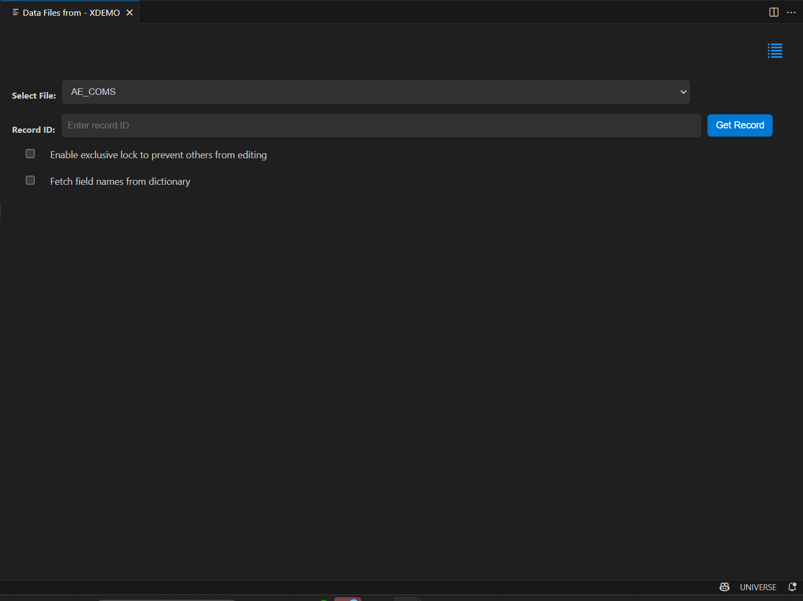
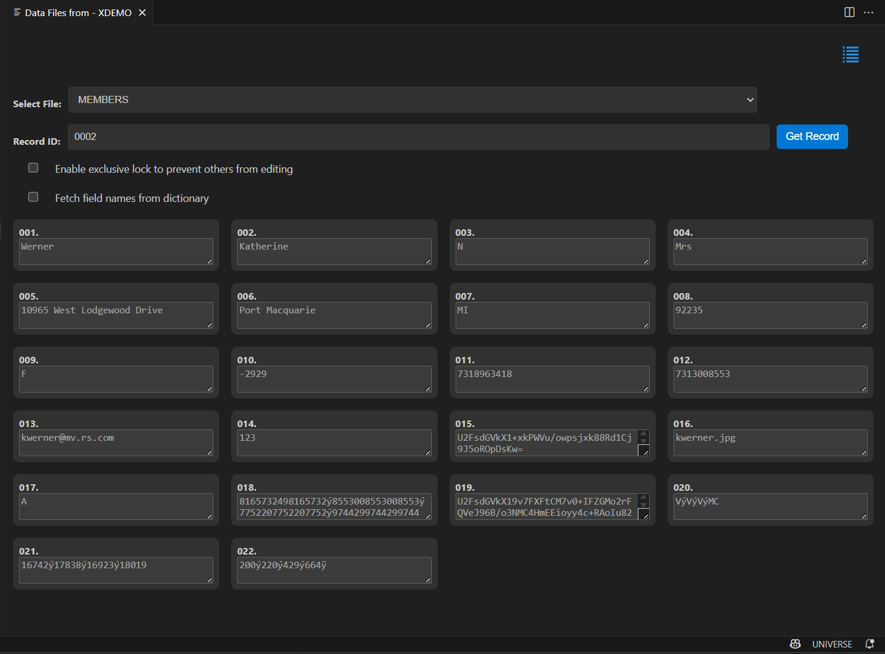
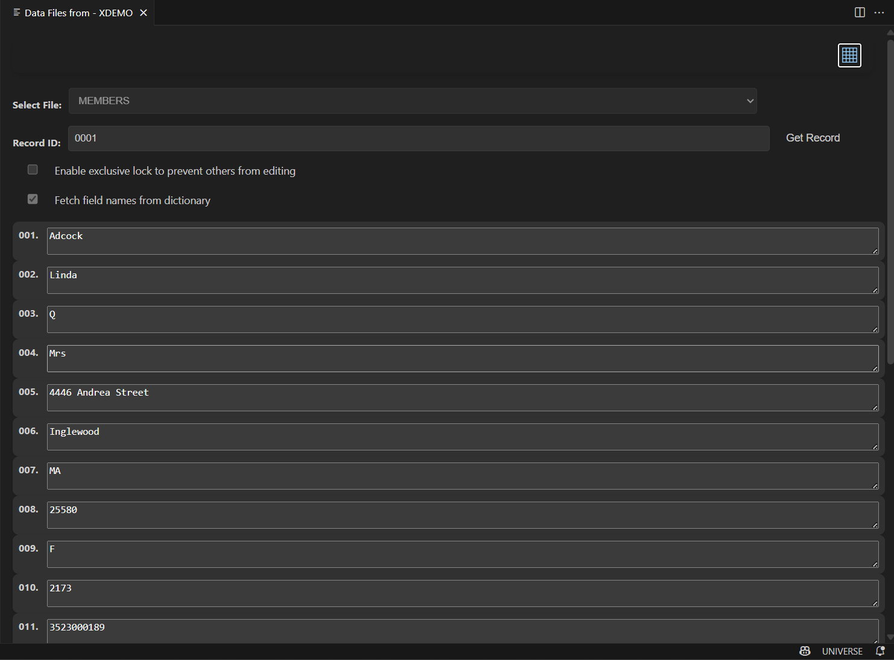
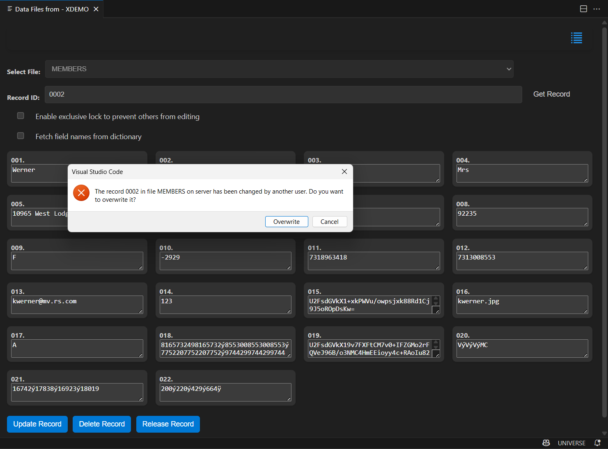

Hashed File Editing (Online Mode)
This user guide provides instructions on how to use the Hashed File Editing feature to manage and edit records in a selected file. This feature allows users to view, edit, update, and delete records through a user-friendly interface.
Note: This feature is enabled for both UniVerse and UniData, but currently works with UniVerse only.
Getting Started
To start using the Hashed File Editing interface:
- Connect to the U2 server.
- Right-click on the account.
- Click on "Show Data Files" to open the Hashed File Editing interface.

Navigating the Interface
The interface is organized into several sections designed to help you manage and edit records efficiently.
File Selection
The File Selection dropdown allows you to choose the file from which you want to view and manage records.
- Select File: Choose a file from the dropdown list
- Files Available: The extension automatically populates the list of available files from the U2 server.
Record ID Input
Use the Record ID Input field to specify the ID of the record you want to view or edit.
- Record ID Field: Enter the record ID in the input box
- Get Record Button: Click this button to fetch the corresponding record from the selected file
Checkbox Options
Two checkboxes provide additional functionality:
- Enable Exclusive Lock: Check this box to lock the record for editing, preventing others from making changes while you are working on it.
- Fetch Field Names from Dictionary: Check this to retrieve field names from the dictionary.
Fields Display
Once a record is loaded, its fields are displayed dynamically in the Fields Display section.
- Each field is shown with its name and value.
- Fields are editable, allowing you to modify values as needed.
If the record is locked by another user, the fields will be displayed as read-only.

Toggle Layout
The Toggle Layout button at the top of the interface provides quick access to different view options. The interface supports two layouts: Grid layout and Row layout. See the images below for reference.


Performing Actions
The interface allows you to perform various actions on records, including viewing, updating, deleting, and releasing locks.
Get Record
To retrieve a record:
- Select a file from the dropdown menu.
- Enter the Record ID.
- Choose whether to lock the record or fetch field names from the dictionary.
- Click the Get Record button to load the record details into the fields.
Update Record
To update a record:
- Modify the fields as needed in the Fields Display area.
- AFter your changes are complete, click the Update Record button. The updated record are saved, and all changes sent to the server.
Note: Optimistic locking is implemented for record updates. You will receive an overwrite confirmation message if conflicts are detected. See the image below for reference:

Delete Record
To delete a record:
- Click the Delete Record button to permanently remove the record from the selected file. A confirmation message displays to ensure you want to proceed with the deletion.
Release Record
When a record is locked:
- The Release Record button becomes visible. Click this button to release the exclusive lock on the record, allowing other users to edit it.